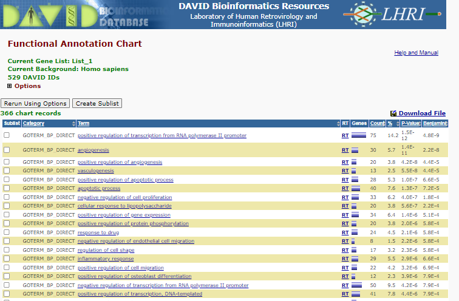
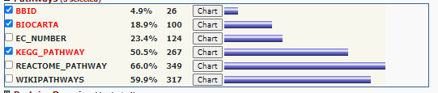
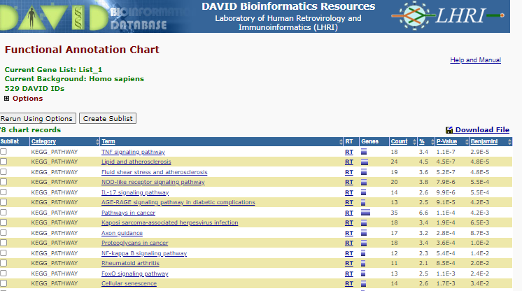
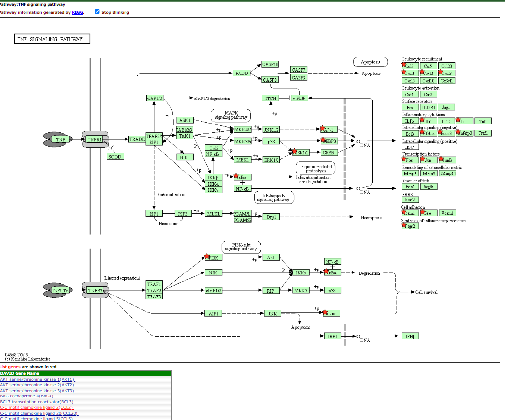
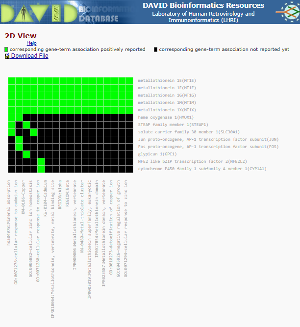
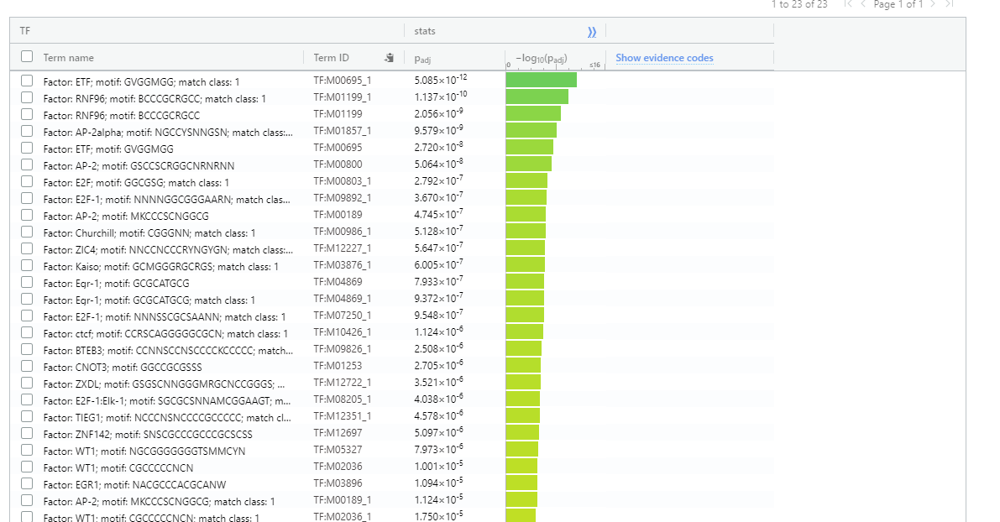
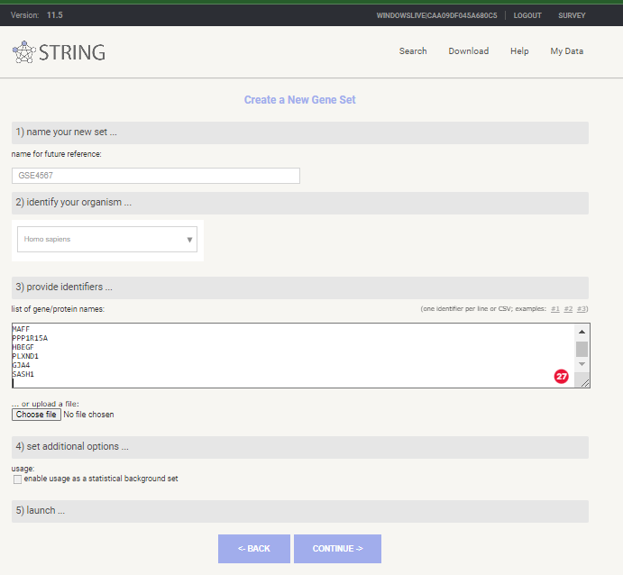
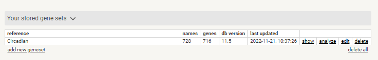
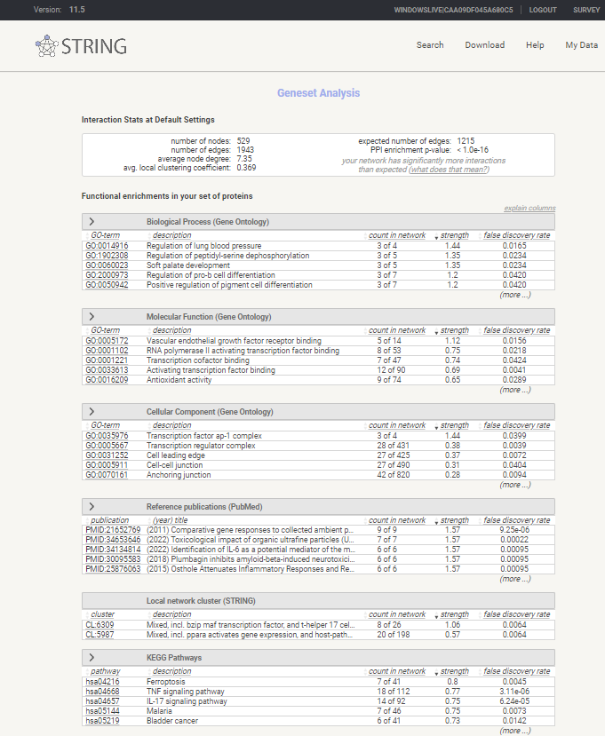
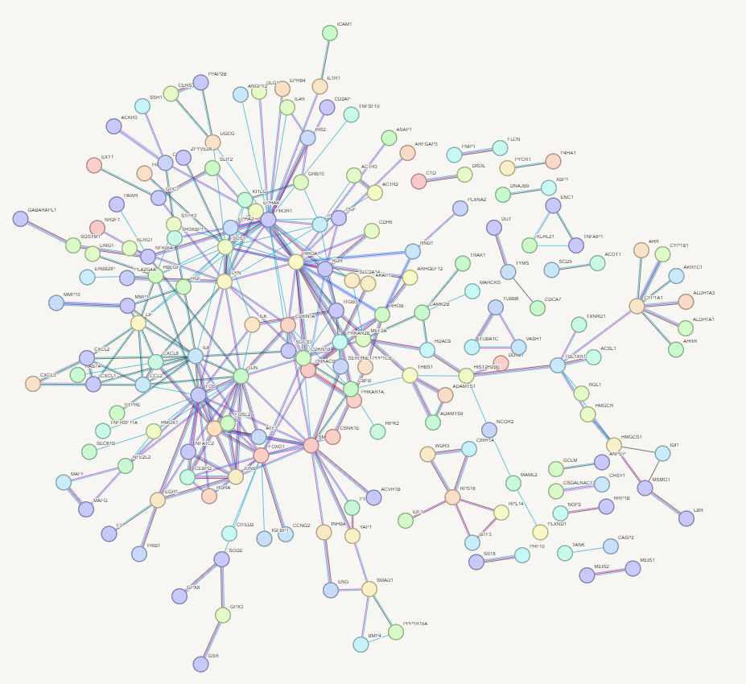

Workshop Overview
You have generated a list of Differentially Expressed Genes (DEGs) passing a inital set of criteria you have defined. There are 2 criteria that are commonly used; 1) Statistical = filtered on PAdj (FDR adjusted p-value); and, 2) Level of response, fold change (FC) - filtered on log2FC (log 2 Fold Change).
For SARTools & Geo2R data both of these parameters are in you output file but GEO Dataset ‘analsyis ’profile_data.txt’ output only provides normalised counts with full metadata provided in dedicated row along the top. You can manually reformat this data to generate Log2FC but without access to the original raw data PAdj cannot be calculated. You can refilter your list to increase or decrease you stringency. Also you may want to expoloit venn diagram approaches to generate a DEG list that are common to specific treatments or timepoints. These refined gene lists may provide increased insight to the biology than just a binary comparison.
Gene IDs, Gene Symbols or Probe IDs
One of the most sigificant challenges for functional interpretation is navigating from what seems to be uninteligable codes associated with your DEGs to informative biological functions. The tools achive this by linking the Gene ID, Gene Symbol or Probe ID you provide with know functional descriptions. Some IDs are easier to link than others, for instance StringDB and gProfiler Ensembl Gene ID and Uniprot IDs link to the Uniprot ‘data warehouse’ that integrates lots of data sources to provide rich functional information. In contrast DAVID also uses Entrez gene IDs as well and specific species ID - flybase ect as well as links to many array IDs (Affymetric and Agilent). There are ID converts - Uniprot Retrieve/IDs requires you to know the ID you are mapping whilst DAVID’s converter tool will try and identify the best match from the IDs you provide - this can be very useful if you dont know where the IDs are you are using. The most robust but hardest to configure is ClusterProfiler because you provide the mapping file - this can very chanllenging to crfeate but once done you are in control and know specifically how the mapping is happening.
Key Statistical Concept - Fisher’s Exact Test and Enrichment Analysis
The workshop will use tools that exploit statistical approaches to identify the biological pathways or processes that are over represented (some time refereed to as enriched) within the DEGs. You will not need to derive the mathematical formula underpinning these concepts or deploy the algorithums from first principles since the software you will use does this for you but it is worth knowing the background. There is an excellent academic from UNC-Chapel Hill, Prof Josh Starmer, who runs a youtube channel called StatQuest this deal with a large range of biological stats and has some great annotations to explain them, I am going to suggest you watch two of his videos to orientate you about the key statistical concepts for this session:
4.1 Filtering Gene Lists
Excel
All of the DEG outputs we have discussed can be imported into Excel and filtered and maniputated. However, there are a couple of potential pits falls you want to avoid especially linked to data import; 1) Scientific Numbers, and; 2) NA or empty cells. The first is relative straightforward - the DEG lists you have generated will have Padj expressed as an scientific number 2.7445146621638e-07 if you drag-and-drop the DEG list into excel or just try to open the file you will be asked the question Convert Digits surrounding the letter “E” into scientific notation - you much agree to convert these so they will be recognised as true numbers. R also may generate spreadsheets which contain NA entries, usually indicating an error in calculation for instance a number result from dividing by zero or log(0). On import the columns that contain NAs will not be treated as numbers therefore preventing you filtering - this means when you import these columns you should replace the NA with an number that removes them from analysis (ie pAdj=1 or Log2FC=0) or remove the entire row.
To import into excel, Open Blank Workbook in Excel Data > Get Data > From File > Text/CSV. Now Navigate and select file to open. At the bottom right of window look for icons ‘load’, Transform Data’ and ‘Cancel’, select Tranform Data. This menu allows you to configure your spreadsheet - you can remove unwanted columns ect at this point. However, the main issue is to check that Excel us importing the numbers correctly. If you navigate to the top of the Log2FC column you may see a icon ABC icon as seen in the following.
R
For SARTools outputs we have configured a Filtering.r script - copy this into work workdir and open it through your POSIT R studio (or loacl Rstudio interface).
cp ~/classdata/Session5/RNAseq-Analysis/Filtering.r ~/mydata/[workdir]
Filtering Script
##Mark genes that are differentially expressed and filter to just look at those
#Read in your Rdata that you saved previously
load("projectName.RData")
#Put the DESeq2 results objects into a list called deData
deData<-out.DESeq2$results
#Create a factor indicating which genes are DE
#For a gene to be DE in a pairwise comparison it needs to be a) significant overall and b) have a log2FC >1
indicateDEGS<-function(deData){
DE<-deData$padj <= 0.05 #Set P (adjusted) cut off
DE[is.na(DE)]<-FALSE
DE[deData$log2FoldChange < 1 & deData$log2FoldChange > -1]<-FALSE #Set fold change cut off
return(DE)
}
for (i in names(deData)){
deData[[i]]$DE<-indicateDEGS(deData[[i]])
}
#Filter the Deletion_vs_Control to just see DE genes
View(as.data.frame(deData$Deletion_vs_Control[deData$Deletion_vs_Control$DE==T,]))
Adpation of filtering for Geo2R
If you have generated output from Geo2R you will need to input this into R by adding the following code at the beinign of the script:
deData <- read.table(file = '[Geo2R_output.tsv]', sep = '\t', header = TRUE)Also on line 12 and 14 make the following changes
# line 14
DE<-deData$padj <= 0.05 #replace with
DE<-deData$adj.P.Val
# line 16
DE[deData$log2FoldChange < 1 & deData$log2FoldChange > -1] # replace with DE[deData$logFC < 1 & deData@logFC > -1]4.2A ClusterProfiler
We have configured a GOenrichment.r script - copy this into work workdir and open it through your POSIT R studio (or loacl Rstudio interface).
cp ~/classdata/Session5/RNAseq-Analysis/GOenrichment.r ~/mydata/[workdir]Follow the instructions in the script.
GOenrichment
###Over-representation analysis
## You will need to have already fun the filtering script to mark which genes in the DESeq results are differentially expressed
#Install packages
#BiocManager::install("GO.db", lib.loc="/home/sbi9srj/mydata/Rpackages")
#BiocManager::install("clusterProfiler", lib.loc="/home/sbi9srj/mydata/Rpackages")
#BiocManager::install("AnnotationDbi", lib.loc="/home/sbi9srj/mydata/Rpackages")
library(GO.db)
library(clusterProfiler)
#Get GO terms for each gene from ensembl
#Select your genome and download the fields Gene.stable.ID, Transcript.stable.ID, GO.term.accession, GO.term.name and Gene.name
#Downloaded from http://www.ensembl.org/biomart/martview/6207f5f59f2bbb4ec6a6fdc752f28c1e
go<-read.csv("~/classdata/go_map.csv")
fullgo<-c(as.list(GOTERM),as.list(GOOBSOLETE))
#Add in the gene IDs to the DESeq results
for (i in names(deData)){
deData[[i]]$ID<-go$Transcript.stable.ID[match(rownames(deData[[i]]), go$Gene.stable.ID)]
}
#Create some plotting functions
mod.barplot<-function(obj, ont, ...){
obj@result<-obj@result[obj@result$Ontology==ont,]
barplot(obj, ...)
}
#Only DEGs in each comparison at P <= 0.05
#Enrichment relative to annotated genes present in transcriptome
#Make a list for outputs
GO.out<-list()
for(i in names(deData)){
GO.out[[i]]<-enricher(deData[[i]][,"ID"][deData[[i]][,"DE"]=="TRUE"],
universe = deData[[i]][,"ID"],
TERM2GENE=go[,c(4,2)], TERM2NAME=go[,c(4,5)],
pvalueCutoff = 1, qvalueCutoff = 1)
GO.out[[i]]@result[GO.out[[i]]@result$p.adjust <= 0.05,]
}
#Visualise one of them
barplot(GO.out$Deletion_vs_Control)
#Add in ontology info (BP, CC or MF)
for(i in names(GO.out)){
GO.out[[i]]@result$Ontology<-as.factor(sapply(match(GO.out[[i]]@result$ID,names(fullgo)), function(x) if (!is.na(x)) {Ontology(fullgo[[x]])} else {NA}))
}
#Plot barplots for each separately
mod.barplot(GO.out$Deletion_vs_Control, ont = "BP", title = "BP Enrichment", showCategory = 15, font.size = 8)4.2B DAVID
Database for Annotation, Visualization and Integrated Discovery - DAVID
David Web site - https://david.ncifcrf.gov/
Gene Enrichment Analysis with David
[David - Database for Annotation, Visualization and Integrated Discovery] (https://david.ncifcrf.gov/) was the tool to use for gene enrichment from 2005 - 2016 but the database it hosted became out of date due to a break in the research groups funding. From 2016 (gprofiler)[https://biit.cs.ut.ee/gprofiler/gost] and (stringdb)[https://string-db.org/] have been prefered because they have been kept upto date. However, DAVID was refunded and a 2021 update means it is back to being maintained. Although there will not be time to explore it in our workshop the following workshop and video is there to support anyone wanting to explore its functionality.
1. Start analysis and upload you data
Select < start analysis >
Paste in you gene list (1) in box (A) and, select identifier (2), and identify as a Gene List (3). Select your species (2a) . In more nuanced analysis you may wish to define your own background - this is useful when working with non-model organisms or if your starting population does not represent the entire genome.
 DAVID Upload
DAVID Upload
now select < Submit List >
2. Generate Functional Analysis of gene list
If you have used a non-regulate gene identifier or it does not recognize the identifier type you have used it may ask you to convert the identifiers - check the programs suggestion - it is usually good but you should check.
Select < Functional Annotation Tool >
You will now be give a annotation summary as shown below:
 Annotation Summary
Annotation Summary
You will see a range of categories for which the functional annotation has been performed. The analysis told has not only cross referenced the gene list against a range of functional databases it has also analysed the gene co-appearance in citations (Literature), links to disease (Disease) and Interactions agonist other linkages.
3. Review Gene Ontology Enrichment
Let us consider the functional enrichment using (Gene Ontology)[http://geneontology.org/]. Gene Ontology categorizes gene products using three distinct characteristics - Molecular Function (biochemistry of the product), Cellular Component (where it appears in the cell), and the Biological Processes - see more about these classification by reviewing the (Gene Ontology Overview documentation)[http://geneontology.org/docs/ontology-documentation/]. Although ontologies are hierarchical, they are not a simple classification system, they not only allow for gene products to be involved with multiple processes the relationship between elements in the hierarchy are closely defined. The ontology also allows for classification to be as specific or detailed as knowledge allows ie if a protein is a transporter but what it transports is not known it will be defined by a mid-level term ‘transporter’ but if it is known to transport Zn it will be classified at a ‘Zinc transport’ as well as a ‘transporter’. Enrichment analysis uses fisher exact test (see about) to calculate the enrichment at each of these ‘levels’ - although I usually choose to look at the integrated data summarized under the ‘GOTERM_[BP/CC/MF]_DIRECT’.
click on the + next too the < Gene_Ontology > category
Select < Chart > right of the GOTERM_BP_DIRECT
 BP Enrichment
Note the P-value and benjamini correct p-value displaying the like hood that those specific Go terms are represented by random - i.e. lost the P-value the less likely the representation of the term is a random select , therefore the more likely the term is enriched.
To see the list of gene involved in for instance ‘positive regulation of osteoblast differentiation’ click on the blue bar under the ‘Genes’ column.
This is the list you will see:
 positive regulation of osteoblast differentiation
positive regulation of osteoblast differentiation
Now review enrichment for Cell Component and Molecular Function.
4. Pathway analysis
click on the + next too the < Pathways > category
 Pathway Options
Select < Chart > right of the KEGG
 KEGG Enrichment
You will see a list of enriched pathways - Note the P-value and benjamini correct p-value displaying the like hood that those specific pathways are represented by random - i.e. lost the P-value the less likely the representation of the pathway is a random select, therefore the more likely the pathways is enriched.
click on the < TNF Signalling Pathway >_ in the term column
This will display the pathway with the terms that are present in the list shown with red stars or highlight by redtext below the figure.
 TNF Signalling Pathway
Explore some more pathways
5. Functional Annotation Clustering
DAVID attempts to summarise enrichment between categorization systems using a tool it terms - Functional annotation clustering. If you select this for you current data set. you will be provided with the following clusters:
 Functional Annotation Clustering
Functional Annotation Clustering
Each cluster is assigned an enrichment score under which ‘terms’ that are enriched under different classification systems are displayed grouped together. Each ‘grouping’ is given a ‘Enrichment Score’ the larger the enrichment score the higher the score the more likely that cluster is being enriched. Note that the is a ‘Classification Stringency’ pull down menu that allows you to define the strength of associated of the term being grouped together.
For annotation Cluster 6 (which contains lots of Metallothionein/cadimum associated terms) there is a small green and black box - after the Enrichment Score and the ‘G’ - click on this box. This brings up a cluster matrix showing the gene gene products on the Y-axis and the classification ‘vlasses’ on the X-axis.
 Cluster Matrix
Enrichment with David Panopto
4.2C gPofiler
- Load you DEG list
Paste you DEG list into the box and click on < Run query > (I suggest you select Benjamin-Hochberg FDR under Advanced options)
 gprofiler upload data
gprofiler upload data
You may be asked if you wish to confirm gene identified - if you are accept the selected options.
- Review Enrichment
You will be presented with and enrichment summary.
 Enrichment Summary
Enrichment Summary
Here the y-axis is -log10(adjPValue) - so the larger the number the more improbably the functional representation is there by random. The size of the symbols represent the number of genes in each category.
Now select < Detailed Results > this is a tab that is displayed about halfway down the page
 gprofiler detailed results
gprofiler detailed results
Note:
Adjusted p-value if give next to each term
Top of the detailed results page there is ‘CSV’ option to download the data into a spreadsheet format.
- Consider the Transcription Factor enrichment.
Gene regulation is at the heart of DEGs - co-regulated gene should should have direct or indirect regulatory network moderated through conserved transcription factor binding sites.
 Transcription Factor enrichment
4.2D String-db
- Login to String-db
Open String-db and login using an appropriate account
- Upload your data
Select < My data > from top menu
Select < create new gene set > under < Your stored gene sets >
Give you Gene List a Name, select Homo sapiens as species and past in your gene symbols
 New Gene Set in STRING-db
Select < continue >
if asked to review mappings < please review the mappings … > select continue
- Explore Gene Enrichment
Review stored Gene set and select < analyse >
 Stored Gene Set in STRING-db
Review Enrichment analysis
 Enrichment analysis in STRING-db
4.3 Semantic similarity with Revigo
Revigo can take long lists of Gene Ontology terms and summarize them by removing redundant GO terms using semantic similarity. The input you need is a list of GO terms in the format GO:[NUMBER] a tab and the associated p-value.
1. Export GO terms and P-values
1A. gprofiler
Under the detailed results menu there is a CSV icon which when clicked can be used to export your enriched terms as a CSV which can then be imported into excel. You can use the associated setting button (the cog symbol next toi the CSV) to select only GO terms to export for this exercise.
 gprofiler export
gprofiler export
You will then need to copy column C and D into Revigo
1B. DAVID
After you have completed the functional analysis select < Gene_ontology > GOTERM_BP_DIRECT > Chart >
now Select < Download File >
 DAVID Go Download
DAVID Go Download
This will either display the enrichment table into the browser window or ask for a save location depending on your browser settings. If you are not asked for a save location right hand click the displayed table and select Save as and save to a appropriate location as a text file. This text file can be opened/imported into excel. You will file the GO term is concatenated with the GO description in Column B. To split this insert a blank column after column B, then select column B and select menu option < Data > Test to columns >. Select < Delimited > Next >_ and use the radio button to select other and add a ~_ to the box directly to the right of this option. Now click < Next and Finish >. You will see the GO term in now in Column B and the P-value in column F. Select these columns and paste them into Revigo.
You should now repeat this process for Molecular Function and Cell Component Terms.When all the data is merged you can paste the GO term and P value into Revigo.
2. Revigo data entry
Enter GO terms and P-values into Revigo - they should be in format
Term PValue
GO:0045892 7.75E-06
GO:0006694 3.29E-04Leave the default settings and select < Start Revigo >
3. Review Revigo Results
For each GO term category Revigo will generate a Scatterplot, Table, 3D scatter plot, interactive Graph and Tree Map. Note: at the bottom of each plot there are export options for R and other formats _.
The most intuitive format is are the Tree Maps (see below) whilst the Scatterplot output table, which include terms like ‘Frequency and Uniqueness’ can be used to create networks in Cytoscape.
 Revigo BP TreeMap
Revigo BP TreeMap
4.4 Gene Networks in Stringdb
- Login to String-db
Open String-db and login using an appropriate account
- Review your datauploads
select one of your dataset and now select < show >
Select < view as a interactive network >
You will now see a very large and detailed network - go to bottom on page and select settings and change to match the following settings. The select < update >
 STRING-db Settings
STRING-db Settings
First_network
 STRING-db Network
Now play and refine your network - try clusting using 3 clusters
[STRING Panopto](https://cardiff.cloud.panopto.eu/Panopto/Pages/Viewer.aspx?id=edfe7653-7e16-45b0-8e1e-ac7401079592